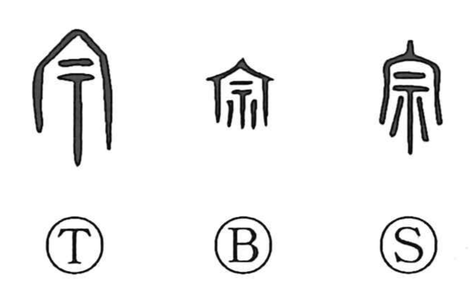

宗

Kun: | On: shu, so
ancestral shrine ・ head family ・ sect
Explanation
宗 combines 宀, the roof of a mausoleum, with 示, the altar used in worship, to depict the ancestral hall where an altar is set to honor the spirits of the forebears—the mitamaya. From the reverence for those enshrined ancestors, the character came to denote the principal family line, the head house or main branch (as in 本宗 and 宗家). In later usage it broadened to the religious sphere to mean a sect and its guiding tenets (宗派, 宗旨). The original on‑reading is so, while in religious compounds it is commonly read shu.